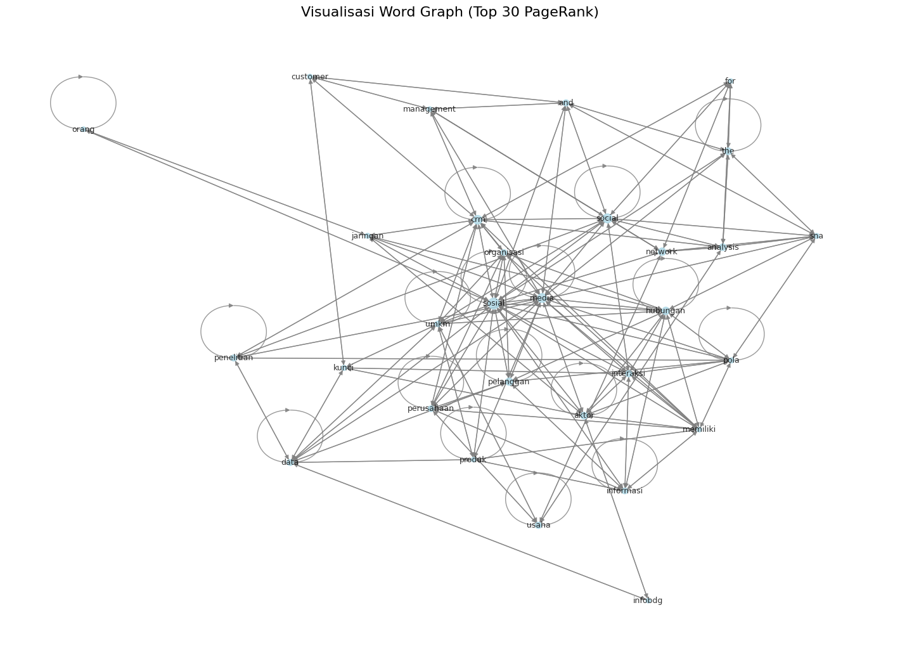

Graph dari data paper#
install library#
!pip install PyMuPDF networkx nltk
Collecting PyMuPDF
Downloading pymupdf-1.26.6-cp310-abi3-manylinux_2_28_x86_64.whl.metadata (3.4 kB)
Requirement already satisfied: networkx in /home/codespace/.local/lib/python3.12/site-packages (3.5)
Requirement already satisfied: nltk in /usr/local/python/3.12.1/lib/python3.12/site-packages (3.9.2)
Requirement already satisfied: click in /usr/local/python/3.12.1/lib/python3.12/site-packages (from nltk) (8.3.1)
Requirement already satisfied: joblib in /home/codespace/.local/lib/python3.12/site-packages (from nltk) (1.5.2)
Requirement already satisfied: regex>=2021.8.3 in /usr/local/python/3.12.1/lib/python3.12/site-packages (from nltk) (2025.11.3)
Requirement already satisfied: tqdm in /usr/local/python/3.12.1/lib/python3.12/site-packages (from nltk) (4.67.1)
Downloading pymupdf-1.26.6-cp310-abi3-manylinux_2_28_x86_64.whl (24.1 MB)
?25l ━━━━━━━━━━━━━━━━━━━━━━━━━━━━━━━━━━━━━━━━ 0.0/24.1 MB ? eta -:--:--
━━━━━━━━━━━━━━━━━━━━━━━━━━━━━━━━━━━━━━━╸ 23.9/24.1 MB 169.9 MB/s eta 0:00:01
━━━━━━━━━━━━━━━━━━━━━━━━━━━━━━━━━━━━━━━╸ 23.9/24.1 MB 169.9 MB/s eta 0:00:01
━━━━━━━━━━━━━━━━━━━━━━━━━━━━━━━━━━━━━━━━ 24.1/24.1 MB 49.4 MB/s 0:00:00
?25h
Installing collected packages: PyMuPDF
Successfully installed PyMuPDF-1.26.6
import & stopword setup#
import fitz # PyMuPDF
import nltk
import re
import networkx as nx
import numpy as np
import pandas as pd
from nltk.corpus import stopwords
from nltk.tokenize import sent_tokenize, word_tokenize
nltk.download("punkt")
nltk.download("stopwords")
stop_words = set(stopwords.words("indonesian"))
[nltk_data] Downloading package punkt to /home/codespace/nltk_data...
[nltk_data] Unzipping tokenizers/punkt.zip.
[nltk_data] Downloading package stopwords to
[nltk_data] /home/codespace/nltk_data...
[nltk_data] Unzipping corpora/stopwords.zip.
upload#
from google.colab import files
uploaded = files.upload()
pdf_name = list(uploaded.keys())[0]
---------------------------------------------------------------------------
ModuleNotFoundError Traceback (most recent call last)
Cell In[3], line 1
----> 1 from google.colab import files
2 uploaded = files.upload()
4 pdf_name = list(uploaded.keys())[0]
ModuleNotFoundError: No module named 'google'
ekstrasi teks dari pdf#
doc = fitz.open(pdf_name)
text = ""
for page in doc:
text += page.get_text()
print("Teks berhasil diekstrak. Panjang:", len(text))
Teks berhasil diekstrak. Panjang: 25087
ekstrak kalimat#
nltk.download("punkt_tab")
sentences = sent_tokenize(text)
print("Jumlah kalimat:", len(sentences))
[nltk_data] Downloading package punkt_tab to /root/nltk_data...
[nltk_data] Unzipping tokenizers/punkt_tab.zip.
Jumlah kalimat: 181
preprocessing teks#
clean_sentences = []
for sent in sentences:
sent = sent.lower()
sent = re.sub(r"[^a-zA-Z\s]", " ", sent)
tokens = word_tokenize(sent)
tokens = [w for w in tokens if w not in stop_words and len(w) > 2]
clean_sentences.append(tokens)
clean_sentences[:3]
[['analisis',
'jejaring',
'sosial',
'social',
'network',
'analysis',
'membantu',
'social',
'crm',
'umkm',
'cimahi',
'social',
'network',
'analysis',
'using',
'social',
'network',
'analysis',
'help',
'social',
'crm',
'for',
'msmes',
'cimahi',
'asep',
'hadiana',
'wina',
'witanti',
'jurusan',
'informatika',
'fmipa',
'universitas',
'jenderal',
'achmad',
'yani',
'jalan',
'terusan',
'jenderal',
'sudirman',
'cimahi',
'email',
'ahadiana',
'gmail',
'com',
'abstrak',
'customer',
'relationship',
'management',
'crm',
'strategi',
'organisasi',
'berusaha',
'meningkatkan',
'kepuasan',
'loyalitas',
'pelanggan',
'menawarkan',
'layanan',
'terbaik',
'pelanggan'],
['organisasi', 'menyadari', 'crm', 'terbantu', 'media', 'sosial'],
['social',
'crm',
'perluasan',
'crm',
'mengintegrasikan',
'media',
'sosial',
'crm']]
ambil kata unik#
vocab = sorted(list({word for sent in clean_sentences for word in sent}))
vocab_index = {word: i for i, word in enumerate(vocab)}
V = len(vocab)
print("Jumlah kata unik:", V)
Jumlah kata unik: 691
buat matriks frekuensi dan 0/1#
window_size = 2
# Matriks frekuensi
co_freq = np.zeros((V, V), dtype=int)
for sent in clean_sentences:
for i, word in enumerate(sent):
w1 = vocab_index[word]
# cek kata dalam window size
for j in range(max(0, i - window_size), min(len(sent), i + window_size + 1)):
if i == j:
continue
w2 = vocab_index[sent[j]]
co_freq[w1][w2] += 1
# Matriks 0/1 (adjacency)
co_binary = (co_freq > 0).astype(int)
co_binary[:10, :10]
array([[0, 0, 0, 0, 0, 0, 0, 0, 0, 0],
[0, 0, 0, 0, 0, 0, 0, 0, 0, 0],
[0, 0, 0, 0, 0, 0, 0, 0, 0, 0],
[0, 0, 0, 0, 0, 0, 0, 0, 0, 0],
[0, 0, 0, 0, 0, 0, 0, 0, 0, 0],
[0, 0, 0, 0, 0, 0, 0, 0, 0, 0],
[0, 0, 0, 0, 0, 0, 0, 0, 0, 0],
[0, 0, 0, 0, 0, 0, 0, 0, 0, 0],
[0, 0, 0, 0, 0, 0, 0, 0, 0, 0],
[0, 0, 0, 0, 0, 0, 0, 0, 0, 0]])
tampilkan matriks#
df_binary = pd.DataFrame(co_binary, index=vocab, columns=vocab)
df_freq = pd.DataFrame(co_freq, index=vocab, columns=vocab)
print("Matriks BINARY (0/1):")
df_binary.head()
print("Matriks FREKUENSI:")
df_freq.head()
Matriks BINARY (0/1):
Matriks FREKUENSI:
| abstract | abstrak | achieving | achmad | actor | actors | agndhkaaaaa | ahadiana | akademik | aktivitas | ... | with | wonwurd | woodcock | yanchun | yani | york | youtube | zaman | zhang | zhao | |
|---|---|---|---|---|---|---|---|---|---|---|---|---|---|---|---|---|---|---|---|---|---|
| abstract | 0 | 0 | 0 | 0 | 0 | 0 | 0 | 0 | 0 | 0 | ... | 0 | 0 | 0 | 0 | 0 | 0 | 0 | 0 | 0 | 0 |
| abstrak | 0 | 0 | 0 | 0 | 0 | 0 | 0 | 0 | 0 | 0 | ... | 0 | 0 | 0 | 0 | 0 | 0 | 0 | 0 | 0 | 0 |
| achieving | 0 | 0 | 0 | 0 | 0 | 0 | 0 | 0 | 0 | 0 | ... | 0 | 0 | 0 | 0 | 0 | 0 | 0 | 0 | 0 | 0 |
| achmad | 0 | 0 | 0 | 0 | 0 | 0 | 0 | 0 | 0 | 0 | ... | 0 | 0 | 0 | 0 | 3 | 0 | 0 | 0 | 0 | 0 |
| actor | 0 | 0 | 0 | 0 | 0 | 0 | 0 | 0 | 0 | 0 | ... | 0 | 0 | 0 | 0 | 0 | 0 | 0 | 0 | 0 | 0 |
5 rows × 691 columns
word graph dari matriks frekuensi#
G = nx.DiGraph()
for i in range(V):
for j in range(V):
if co_freq[i][j] > 0:
G.add_edge(vocab[i], vocab[j], weight=co_freq[i][j])
print("Node:", G.number_of_nodes())
print("Edge:", G.number_of_edges())
Node: 687
Edge: 4511
menghitung pagerank#
pagerank_scores = nx.pagerank(G, weight="weight")
sorted_pr = sorted(pagerank_scores.items(), key=lambda x: x[1], reverse=True)
print("=== TOP 20 PAGE RANK ===")
for w, s in sorted_pr[:20]:
print(f"{w:20s} → {s:.6f}")
=== TOP 20 PAGE RANK ===
sosial → 0.025526
social → 0.017926
media → 0.017161
crm → 0.016699
network → 0.012354
hubungan → 0.012156
pelanggan → 0.011576
the → 0.010064
analysis → 0.010010
aktor → 0.009860
usaha → 0.008707
interaksi → 0.008576
and → 0.008311
penelitian → 0.008207
data → 0.008008
informasi → 0.007411
organisasi → 0.007159
perusahaan → 0.007089
umkm → 0.006759
pola → 0.005786
simpan hasil#
import csv
with open("pagerank_output.csv", "w", newline="", encoding="utf-8") as f:
writer = csv.writer(f)
writer.writerow(["kata", "pagerank"])
for w, s in sorted_pr:
writer.writerow([w, s])
files.download("pagerank_output.csv")
visualisasi#
import matplotlib.pyplot as plt
top_words = [w for w, s in sorted_pr[:30]]
subG = G.subgraph(top_words)
plt.figure(figsize=(14, 10))
pos = nx.spring_layout(subG, k=0.4)
nx.draw(
subG,
pos,
with_labels=True,
node_size=[pagerank_scores[w] * 6000 for w in subG.nodes()],
node_color="lightblue",
edge_color="gray",
alpha=0.8,
font_size=9
)
plt.title("Visualisasi Word Graph (Top 30 PageRank)", fontsize=16)
plt.show()
